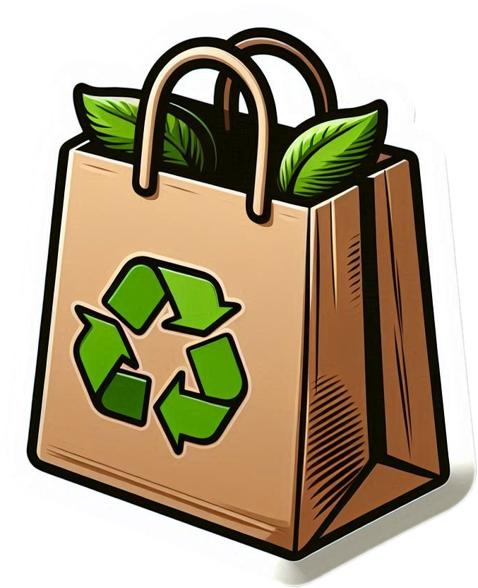
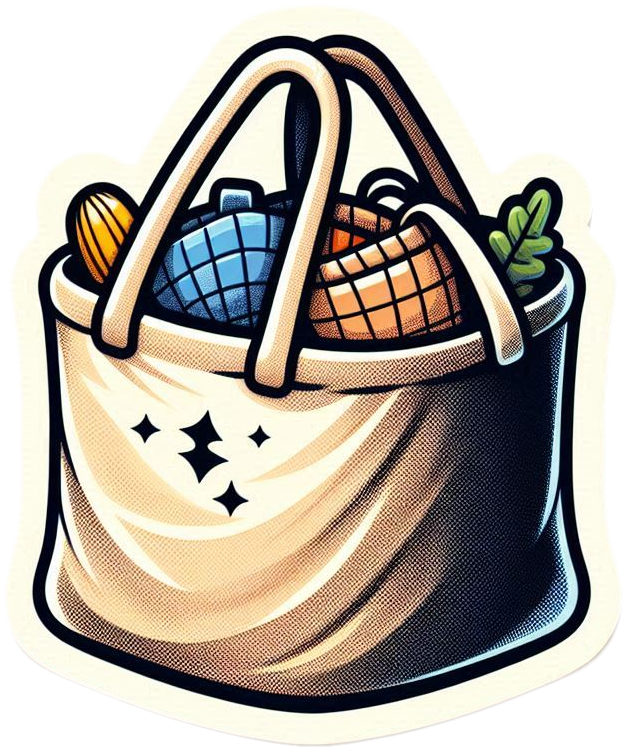
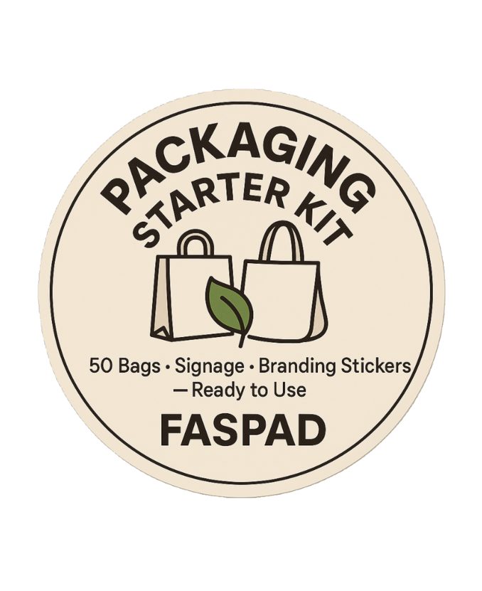

Contact us on WhatsApp +94 76 2004 957

Fascinate Packaging and Design
Eco-friendly, beautiful packaging solutions that inspire — not
pollute.
Designed for planet lovers and bold brands.
At Faspad, we turn recycled and natural materials into sustainable, stylish packaging that tells a story. We're here to help local businesses and our planet thrive — one bag at a time.
“Journey of a thousand miles begins with one step.” — Lao Tzu
Made from recycled materials with custom prints for your brand.

Reusable fabric bags for fruits, vegetables, or groceries — both beautiful and practical.

Starter packs for market sellers with branded bags and stickers.
Over 500+ plastic bags replaced
Every Faspad product saves waste and supports local youth employment. Together, we’re designing a better tomorrow.
Ready to go eco? Contact us for orders, collaborations, or custom designs.
Chat with us on WhatsApp:
Message Us on WhatsApp